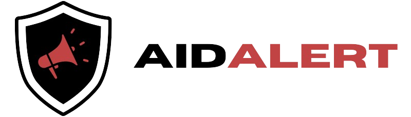

By partnering with local charities, AidAlert ensures that every donation reaches those in need swiftly and efficiently. Together, we can turn awareness into action and make a real difference in times of crisis.

Save the Children, the world’s leading independent children’s organization, has been working in the Philippines for over four decades and is dedicated to transforming children’s lives and the future we share.
Learn MoreCaritas Manila is a non-profit organization that
serves as the lead social service and development
ministry of the Catholic Church in the Philippines.
Philippine Red Cross has truly become the premier humanitarian organization in the country, committed to provide quality life-saving services that protect the life and dignity especially of indigent Filipinos in vulnerable situations.
Learn MoreAngat Buhay Foundation, incorporated as Angat Pinas, Inc., is a non-profit, non-governmental organization based in the Philippines.
Learn MoreBantay Bata 163 is a social welfare program of ABS-CBN Foundation. Launched in 1997, it aims to protect disadvantaged and at-risk children through a nationwide network of social services.
Learn MoreNGITI promotes access to a healthy, safe, and hygienic environment for the children to live and learn in.
Learn MoreGawad Kalinga (GK) ("to give care" in Tagalog) is a Philippine non-governmental organization known officially as the Gawad Kalinga Community Development Foundation. It describes itself as a "poverty alleviation and nation-building movement".
Learn MoreThe Kapwa Ko Mahal Ko Foundation is a Philippines-based non-profit NGO assisting indigent Filipinos with their medical needs through multiple avenues.
Learn MoreThe Maharlika Charity Foundation was founded in May 1973 to provide free surgical services to the poor and the needy. MCFI is a non-stock, non-profit charity foundation.
Learn MoreRoots of Health (Ugat ng Kalusugan) is a nonprofit organization focused on improving the reproductive, maternal and sexual health of women, girls, and their communities in Puerto Princesa, Palawan in the Philippines.
Learn MoreAnawim Lay Missions opened its doors in 1996 to rejected and abandoned elderly who are roaming the streets. Its purpose is to provide a home, a sanctuary, to those poor and abandoned elderly who have nowhere else to go.
Learn MoreThrough our scholarship grants, feeding programs, literacy projects, and health care programs, we seek to bring Peace, Education, Aspiration, Respect, Love, and Smiles (PEARLS) to children in poor communities.
Learn MorePhone: +123 456 7890
Email: contact@charity.org
Address: 123 Charity Lane, Goodville, GV 12345